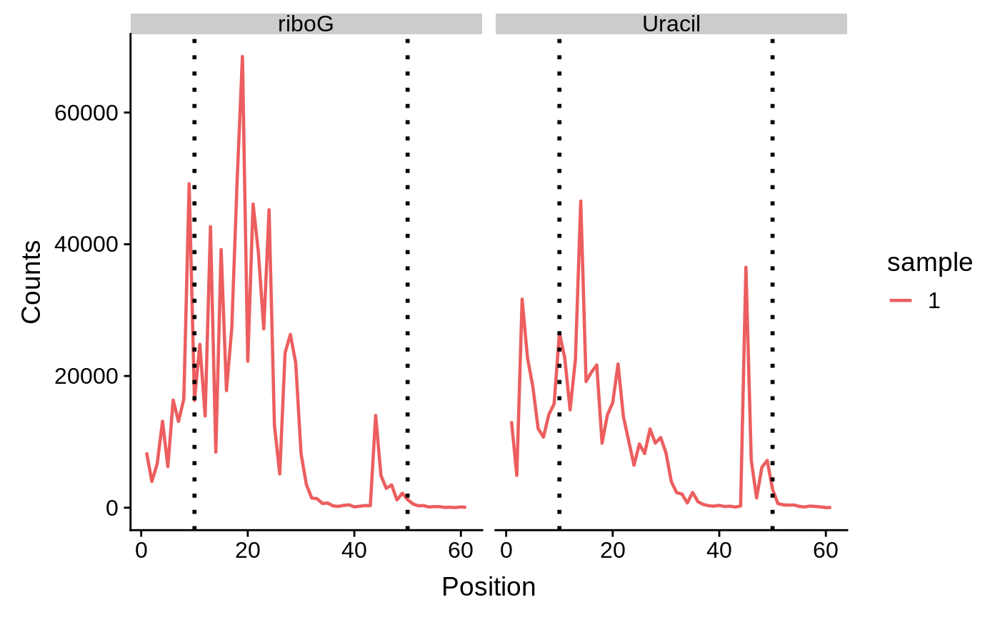
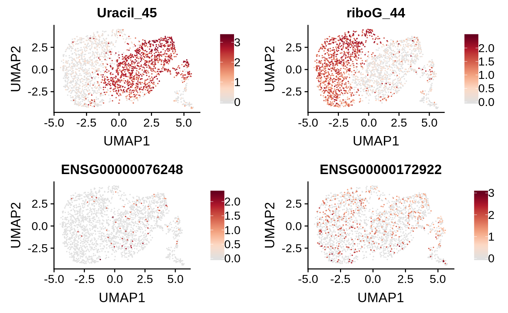
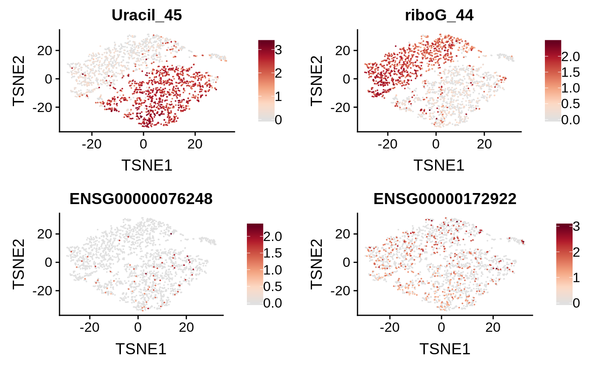

Create a Functional Cell Experiment (fce) object
suppressMessages(library(scrunchy))
suppressMessages(library(SingleCellExperiment))
# load mRNA UMI data
mrna <- scrunchy:::load_csv(scrunchy:::scrunchy_data("mrna.csv.gz"))
mrna[1:5, 1:5]## AAACCTGAGATATGCA.1 AAACCTGAGGCGATAC.1 AAACCTGCAGGACGTA.1
## ENSG00000243485 0 0 0
## ENSG00000237613 0 0 0
## ENSG00000186092 0 0 0
## ENSG00000238009 0 0 0
## ENSG00000239945 0 0 0
## AAACCTGGTACCGGCT.1 AAACCTGTCCAAATGC.1
## ENSG00000243485 0 0
## ENSG00000237613 0 0
## ENSG00000186092 0 0
## ENSG00000238009 0 0
## ENSG00000239945 0 0# load haircut UMI data
hcut <- scrunchy:::load_csv(scrunchy:::scrunchy_data("haircut.csv.gz"))
hcut[1:5, 1:5]## AAACCTGAGATATGCA.1 AAACCTGAGGCGATAC.1 AAACCTGCAGGACGTA.1
## riboG_1 5 3 6
## riboG_10 9 6 9
## riboG_11 11 9 11
## riboG_12 5 3 8
## riboG_13 23 15 19
## AAACCTGGTACCGGCT.1 AAACCTGTCCAAATGC.1
## riboG_1 5 7
## riboG_10 5 6
## riboG_11 6 14
## riboG_12 4 3
## riboG_13 22 25fce is an object of class MultiAssayExperiment, which can contain data from multiple modalities, and importantly does not require that each modality has the same number of cells or features.
## class: SingleCellExperiment
## dim: 33694 2255
## metadata(0):
## assays(1): counts
## rownames(33694): ENSG00000243485 ENSG00000237613 ...
## ENSG00000277475 ENSG00000268674
## rowData names(0):
## colnames(2255): AAACCTGAGATATGCA.1 AAACCTGAGGCGATAC.1 ...
## TTTGTCAGTCATATGC.1 TTTGTCATCCTTTACA.1
## colData names(1): sample_id
## reducedDimNames(0):
## spikeNames(0):## 5 x 5 sparse Matrix of class "dgCMatrix"
## AAACCTGAGATATGCA.1 AAACCTGAGGCGATAC.1 AAACCTGCAGGACGTA.1
## ENSG00000243485 . . .
## ENSG00000237613 . . .
## ENSG00000186092 . . .
## ENSG00000238009 . . .
## ENSG00000239945 . . .
## AAACCTGGTACCGGCT.1 AAACCTGTCCAAATGC.1
## ENSG00000243485 . .
## ENSG00000237613 . .
## ENSG00000186092 . .
## ENSG00000238009 . .
## ENSG00000239945 . .## class: SingleCellExperiment
## dim: 122 2255
## metadata(0):
## assays(1): counts
## rownames(122): riboG_1 riboG_10 ... Uracil_8 Uracil_9
## rowData names(2): hairpin position
## colnames(2255): AAACCTGAGATATGCA.1 AAACCTGAGGCGATAC.1 ...
## TTTGTCAGTCATATGC.1 TTTGTCATCCTTTACA.1
## colData names(1): sample_id
## reducedDimNames(0):
## spikeNames(0):## AAACCTGAGATATGCA.1 AAACCTGAGGCGATAC.1 AAACCTGCAGGACGTA.1
## riboG_1 5 3 6
## riboG_10 9 6 9
## riboG_11 11 9 11
## riboG_12 5 3 8
## riboG_13 23 15 19
## AAACCTGGTACCGGCT.1 AAACCTGTCCAAATGC.1
## riboG_1 5 7
## riboG_10 5 6
## riboG_11 6 14
## riboG_12 4 3
## riboG_13 22 25## DataFrame with 122 rows and 2 columns
## hairpin position
## <character> <character>
## riboG_1 riboG 1
## riboG_10 riboG 10
## riboG_11 riboG 11
## riboG_12 riboG 12
## riboG_13 riboG 13
## ... ... ...
## Uracil_60 Uracil 60
## Uracil_61 Uracil 61
## Uracil_7 Uracil 7
## Uracil_8 Uracil 8
## Uracil_9 Uracil 9# column annotations contain info about each row in the matrix,
# or about each unique cell present in any of the experiments
colData(fce)## DataFrame with 2255 rows and 1 column
## sample_id
## <factor>
## AAACCTGAGATATGCA.1 1
## AAACCTGAGGCGATAC.1 1
## AAACCTGCAGGACGTA.1 1
## AAACCTGGTACCGGCT.1 1
## AAACCTGTCCAAATGC.1 1
## ... ...
## TTTGGTTGTCTAGTGT.1 1
## TTTGTCAAGTGTACTC.1 1
## TTTGTCAGTAGGAGTC.1 1
## TTTGTCAGTCATATGC.1 1
## TTTGTCATCCTTTACA.1 1Plots
plot_hairpin produces a coverage plot across each hairpin in the data.

Specific adduct positions can be highlighted by including this information in the fce object.
# add in adduct information when building fce object
adducts <- data.frame(hairpin = c("Uracil", "riboG"),
adduct_position1 = c(1, 10),
adduct_position2 = c(10, 50),
stringsAsFactors = FALSE)
fce <- create_fce(mrna, hcut, adduct_positions = adducts)
rowData(fce[["fsce"]])## DataFrame with 122 rows and 4 columns
## hairpin position adduct_position1 adduct_position2
## <character> <character> <numeric> <numeric>
## riboG_1 riboG 1 10 50
## riboG_10 riboG 10 10 50
## riboG_11 riboG 11 10 50
## riboG_12 riboG 12 10 50
## riboG_13 riboG 13 10 50
## ... ... ... ... ...
## Uracil_60 Uracil 60 1 10
## Uracil_61 Uracil 61 1 10
## Uracil_7 Uracil 7 1 10
## Uracil_8 Uracil 8 1 10
## Uracil_9 Uracil 9 1 10
## subset which cells are used for plots
plot_hairpin(fce,
cells_to_plot = sample(colnames(fce[["fsce"]]), 1))
Normalize
RNA data is log normalized and scaled to total UMI count for each cell. Functional data is normalized using the center log ratio method used for CITE-Seq analysis.
Normalized data is stored in the logcounts slot of each SingleCellExperiment object.
## AAACCTGAGATATGCA.1 AAACCTGAGGCGATAC.1 AAACCTGCAGGACGTA.1
## riboG_1 1.024823 0.7053563 1.041781
## riboG_10 1.438859 1.1148582 1.322127
## riboG_11 1.595445 1.4045526 1.473117
## riboG_12 1.024823 0.7053563 1.237122
## riboG_13 2.221198 1.8120259 1.918171Feature selection and PCA
# get variable genes
var_genes <- get_var_genes(fce, n_genes = 5000)
# calc PCA and embed in 2D
fce <- calc_pca(fce, n_pcs = 20, genes = var_genes)## scaling data## calculating pcsEmbed cells in 2D using UMAP or tSNE
Cell embeddings are stored in the reducedDims slot of the SingleCellExperiment and can be accessed as a named list.
## List of length 3
## names(3): PCA UMAP TSNE## [,1] [,2]
## AAACCTGAGATATGCA.1 0.7805874 -1.5918535
## AAACCTGAGGCGATAC.1 2.1621524 -1.1456798
## AAACCTGCAGGACGTA.1 3.3273344 3.1127655
## AAACCTGGTACCGGCT.1 0.6450165 -0.9225038Visualization
Cell features can be visulized with the plot_cells function which will plot gene/function assay values or cell metadata.
features <- c("Uracil_45", "riboG_44","ENSG00000076248", "ENSG00000172922")
plot_cells(fce, features)
